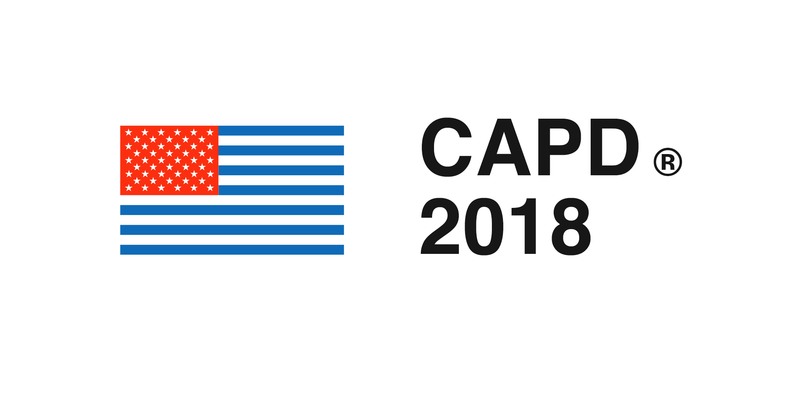
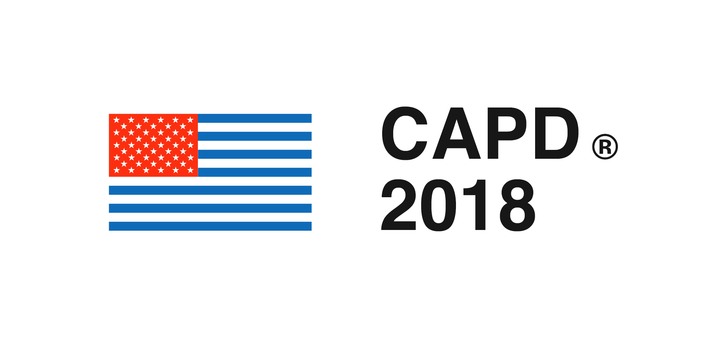

Center for American Politics and Design (CAPD)
Archival Project
2018 — Ongoing
The Center for American Politics and Design (CAPD) is a research group founded in 2018 that maintains an archive of every logo for candidates running in Congressional, Presidential and Gubernatorial races in the United States.
Made with Lukas Bentel, Will Denton, Seth Kranzler, Kevin Wiesner
 
